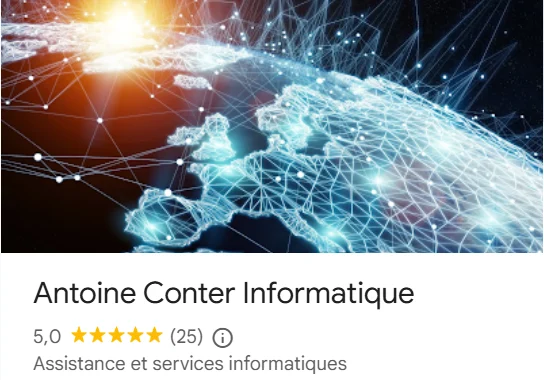

Quand un client cherche votre métier près de chez lui, il appelle l'une des trois entreprises affichées sur la carte Google. Mon travail : que la vôtre en fasse partie.
Illustration : l'effet d'une fiche Google travaillée.
Un beau site ne suffit pas
Sur une recherche comme « plombier Lannilis » ou « coiffeur Lesneven », Google montre d'abord une carte avec trois entreprises, puis les annuaires comme PagesJaunes, puis les sites. La plupart des appels partent de la carte. Elle dépend surtout de votre fiche Google : catégories, avis, photos, mises à jour.
Ce qui fait la différence, c'est que tous vos points de présence soient complets et disent la même chose : fiche Google, annuaires, réseaux sociaux et site.
J'ai d'abord appliqué cette méthode à mon propre site. En novembre 2026, il apparaît en première page de Google sur « dépannage informatique Lannilis », dans la carte sur « informaticien Lannilis », et l'intelligence artificielle de Google le cite dans sa réponse.
Exemple : ma propre fiche Google et PagesJaunes
Avant de le proposer, je l'ai fait pour ma propre entreprise, basée à Plouguerneau. Les deux fiches sont publiques : vous pouvez les ouvrir et vérifier.

La fiche se charge depuis Google Maps, qui peut déposer des cookies.
Fiche GoogleNote de 5,0 sur 25 avis, catégorie « Assistance et services informatiques », horaires et site internet renseignés. Voir ma fiche Google
Fiche PagesJaunes vérifiéeCatégories « Formation informatique » et « Conseils, services, maintenance en informatique », avec un lien vers le site. Voir ma fiche PagesJaunes
C'est le même travail que je fais pour vous : le même nom, le même téléphone et le même site partout, des catégories choisies d'après les recherches réelles de vos clients, des horaires à jour et des avis demandés après chaque intervention.
Le référencement local, concrètement
Le SEO local, c'est l'ensemble des réglages qui font apparaître une entreprise quand quelqu'un cherche son métier dans sa commune. Voici ce que je travaille, dans l'ordre où ça rapporte le plus.
Fiche Google Business Profile
L'ancienne « Google My Business » : catégories exactes, zone desservie, services, photos, horaires et publications régulières.
Avis clients
Une méthode simple pour en demander à chaque client satisfait, et des réponses à chaque avis. C'est ce qui pèse le plus dans la carte.
Mots-clés métier et commune
Les recherches réelles de vos clients, comme « électricien Plabennec » ou « restaurant Landéda », reprises dans vos titres et vos textes.
Pages de service
Une page par prestation importante, avec vos zones, vos prix quand c'est possible et les questions que posent vos clients.
Technique du site
Version mobile, vitesse, titres, données structurées LocalBusiness, inscription dans Google Search Console et Bing Webmaster Tools.
Liens et citations locales
Annuaires des mairies et de la communauté de communes, PagesJaunes, presse locale, partenaires : autant de signaux de confiance pour Google.
Toutes les activités qui ont des clients à proximité, par exemple :
Plombiers, électriciens, chauffagistes
Menuisiers, couvreurs, maçons, peintres
Paysagistes et entretien de jardins
Coiffeurs, esthéticiennes, salons
Boulangeries, boucheries, restaurants
Gîtes, campings, chambres d'hôtes
Ostéopathes, kinés, professions de santé
Garages, taxis, services à domicile
Trois façons de commencer
Audit de visibilité
50 €
Le point de départ. J'analyse votre fiche Google, vos annuaires, votre site et vos réseaux, et je regarde où vous apparaissez face à vos concurrents, commune par commune.
Je m'occupe de votre présence en ligne chaque mois, vous gardez la main sans y passer vos soirées.
Publications sur votre fiche Google
Mises à jour de votre site
Suivi de vos positions et statistiques
Un point simple chaque mois
Site internet
200 €
Un site vitrine clair, rapide et lisible sur téléphone, pensé pour être trouvé dans vos communes et compris par Google comme par les assistants d'intelligence artificielle.
Création ou optimisation de votre fiche Google, correction de vos fiches PagesJaunes et annuaires locaux, méthode pour obtenir des avis : sur devis, après l'audit.
Votre fiche Google, avant et après
Votre entreprise
2 avis★★★★★ 4,9 · 40 avis
EntreprisePlombier · Chauffagiste
Horaires non renseignésOuvert · ferme à 18 h
Aucune photo12 photos de chantiers
Pas de services listésDépannage, installation, entretien
Dernière mise à jour il y a 2 ansPublication cette semaine
Ce que ça change pour vous
Une fiche complète et active donne à Google des raisons de la montrer, et au client des raisons d'appeler : il voit tout de suite ce que vous faites, quand vous êtes ouvert et ce que pensent vos clients.
Les bonnes catégories vous font apparaître sur les bonnes recherches. Les avis récents et les photos rassurent. Les publications montrent que l'entreprise est vivante.
Illustration d'une fiche type. Dans l'audit, je fais ce comparatif sur votre vraie fiche.
Ce que je vérifie pendant l'audit
Votre fiche Google
Catégories, zone desservie, horaires, services et prix, photos, publications, nombre et ancienneté des avis, réponses aux avis.
Vos annuaires
PagesJaunes, Mappy, annuaires des mairies et de la communauté de communes : la bonne rubrique, les communes couvertes, le lien vers votre site.
Vos coordonnées
Le même nom, la même adresse et le même téléphone partout. Des informations différentes brouillent Google et font perdre des places.
Votre site
Titres, textes, version mobile, vitesse, données lues par Google, Search Console, Bing Webmaster Tools, liens venant d'autres sites.
Vos concurrents
Qui passe devant vous, sur quelles recherches et pourquoi : avis, annuaires payants, adresse dans la commune, ancienneté.
Visible aussi dans les réponses des IA
De plus en plus de clients posent leur question à Google, à ChatGPT ou à Copilot. Ces outils reprennent ce qu'ils trouvent : fiche Google, annuaires, avis, contenu des sites. Je rends vos informations faciles à comprendre et à citer : services et zones écrits clairement, données structurées, questions fréquentes.
Payer de la publicité ?
PagesJaunes payant et Google Ads peuvent apporter des clients, pas dans tous les cas. Sur PagesJaunes, les entreprises installées dans la commune passent souvent devant, même gratuites. Sur Google Ads, on paie au clic, sans place garantie. On décide sur des chiffres, après le travail gratuit.
Comment ça se passe
Premier échange gratuitChez vous ou par téléphone, pour comprendre votre activité et vos clients.
Audit à 50 €Un rapport écrit et des priorités claires.
CorrectionsJe les réalise moi-même ou je vous les montre, selon votre choix.
SuiviPonctuel ou avec l'abonnement à 40 € par mois.
Création de site internet à 200 € en Finistère nord
Pour un artisan, un commerçant ou un indépendant de Brest, Lesneven, Lannilis ou Plabennec, un site vitrine sert à une chose : transformer une recherche Google en appel. Je le conçois de A à Z, seul, et je viens chez vous pour comprendre votre activité.
À votre image
Vos couleurs, votre logo, vos photos. Pas de modèle générique copié sur dix autres entreprises.
Lisible sur téléphone
Le site s'affiche correctement sur téléphone, tablette et ordinateur, là où vos clients vous cherchent.
Rapide et pensé pour Google
Chargement rapide, titres et descriptions travaillés, données structurées LocalBusiness et vos communes citées là où il faut.
Vos services et vos prix
Une présentation claire de ce que vous faites, de vos zones d'intervention et, quand c'est possible, de vos tarifs.
Un contact en un geste
Bouton d'appel, formulaire de contact et lien vers votre fiche Google, pour qu'un visiteur devienne un client.
Sans jargon
Je vous explique tout simplement et vous restez maître de votre site.
Deux exemples : le site de la Boucherie Armoricaine à Lesneven, avec ses prestations, ses grilles tarifaires et un contact pour éleveurs et particuliers, et celui de Bruno L'Hostis, professeur indépendant, avec ses cours et un contact simple pour les familles. Voir mes réalisations.
Un site seul ne suffit pas toujours : relié à une fiche Google complète, il pèse beaucoup plus. C'est pourquoi je conseille de commencer par l'audit de visibilité à 50 €.
Référencement local dans les communes du nord Finistère
Google choisit les entreprises de la carte selon trois critères qu'il publie lui-même : la pertinence (votre fiche correspond-elle à la recherche ?), la distance avec la personne qui cherche et la notoriété (avis, liens, citations dans les annuaires). Je travaille les trois, commune par commune. Je me déplace depuis Plouguerneau, et l'audit, le suivi et la création de site peuvent aussi se faire à distance.
Référencement local dans les Abers
Ici, la plupart des recherches citent la commune : « plombier Plabennec », « restaurant Landéda », « gîte Plouguerneau ». Une fiche Google qui indique clairement votre zone desservie vous fait apparaître aussi dans les communes voisines, de Lannilis à Bourg-Blanc.
Référencement local à Lesneven et sur la Côte des Légendes
Autour de Lesneven, on cherche souvent un artisan « près de chez moi » ou dans le bourg voisin : Le Folgoët, Ploudaniel, Kerlouan. Des catégories précises et des avis récents comptent ici davantage que la taille du site.
À Brest, la concurrence est plus forte qu'à la campagne : pour un même métier, beaucoup d'entreprises se disputent les trois places de la carte. Il faut une fiche très complète, des avis réguliers et un site qui cite vos quartiers et les communes autour, comme Guipavas, Gouesnou ou Plouzané.
Entre Saint-Renan, Ploudalmézeau et Le Conquet, une partie des clients sont des vacanciers qui découvrent la région sur leur téléphone. Les photos, les horaires à jour et les réponses aux avis font la différence, surtout pour les gîtes, les restaurants et les commerces.
Référencement local autour de Landerneau et Landivisiau
Pour une entreprise de Landerneau, l'enjeu est souvent d'être trouvée à la fois sur sa ville et sur les communes rurales autour. L'audit et le suivi peuvent se faire à distance, par téléphone et en ligne.
L'audit de visibilité coûte 50 €, l'abonnement visibilité 40 € par mois et le site internet 200 €. La création ou l'optimisation de votre fiche Google et de vos annuaires se fait sur devis, après l'audit.
Qu'est-ce que le SEO local ?
C'est le référencement qui vise les recherches avec un lieu, comme « plombier Lannilis » ou « coiffeur près de moi ». Il repose surtout sur la fiche Google, les avis, les annuaires et un site clair qui cite vos communes.
Google My Business et Google Business Profile, c'est la même chose ?
Oui. Google My Business a été renommé Google Business Profile. C'est la fiche qui affiche votre entreprise dans la carte Google et dans Google Maps.
Pouvez-vous créer ma fiche Google ?
Oui. Je crée ou je reprends votre fiche, je la complète et je vous aide à la faire valider par Google. C'est sur devis, après l'audit, car le travail dépend de l'état de départ.
En combien de temps verrai-je des résultats ?
Les corrections de fiche Google et d'annuaires sont prises en compte en quelques jours à quelques semaines. Un site internet met généralement plusieurs semaines à quelques mois à trouver sa place. Les avis clients, eux, s'accumulent au fil du temps.
Pouvez-vous me garantir la première place sur Google ?
Non, et personne ne peut le garantir honnêtement. Google décide seul de son classement. Je corrige ce qui vous freine, je mesure vos positions avant et après, et je vous dis clairement ce qui a progressé.
Ai-je besoin d'un site internet ?
Pas toujours. Pour beaucoup d'artisans, une fiche Google complète et des annuaires bien remplis apportent déjà l'essentiel des appels. Un site devient utile pour présenter vos services en détail, rassurer et être trouvé sur des recherches plus précises.
Faut-il payer PagesJaunes ou Google Ads ?
Pas avant d'avoir fait le travail gratuit. Ensuite, cela dépend de votre commune, de vos concurrents et du nombre de demandes. L'audit permet de répondre avec des chiffres plutôt qu'au hasard.
Je n'ai pas le temps de m'en occuper, comment faire ?
C'est le rôle de l'abonnement visibilité : je m'occupe des publications, des mises à jour et du suivi, et je vous fais un point simple chaque mois.
Pouvez-vous me faire remonter sur Google dans une autre commune que la mienne ?
Oui, dans une certaine mesure. Google favorise les entreprises proches de la personne qui cherche. En indiquant votre zone desservie, en citant vos communes sur votre site et en obtenant des avis de clients de ces communes, vous pouvez aussi apparaître dans les villes voisines.
Travaillez-vous avec des entreprises de Brest et de Landerneau ?
Oui. Je me déplace dans tout le nord Finistère, de Brest à Landerneau, Lesneven et les Abers. L'audit comme le suivi peuvent aussi se faire à distance.
Faire le point sur votre visibilité
Premier échange gratuit, puis un audit à 50 €. En Finistère nord ou à distance.